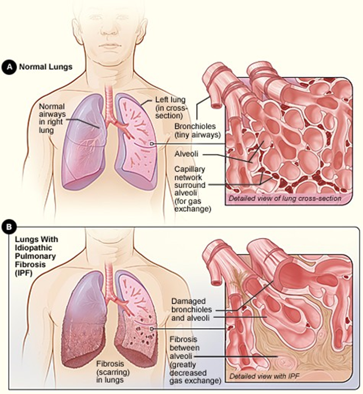

Pulmonary Disorders (2)
Restrictive Disorders
Ex., pulmonary fibrosis
Accumulation of fibrous connective tissue in alveolar wall.
v
ital capacity; normal FEV
1
;
compliance
*Reduced lung volume
Evident in which phase of ventilation?
